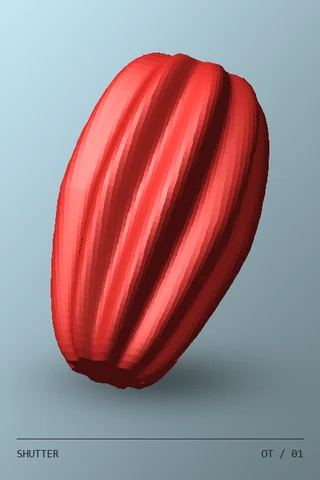
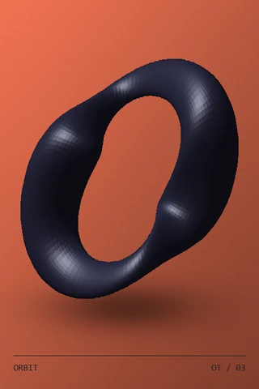
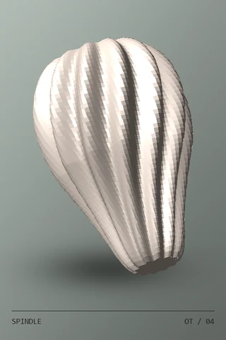
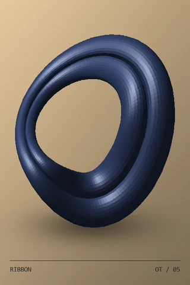
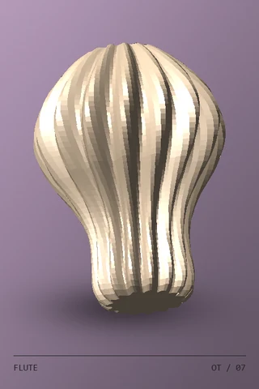
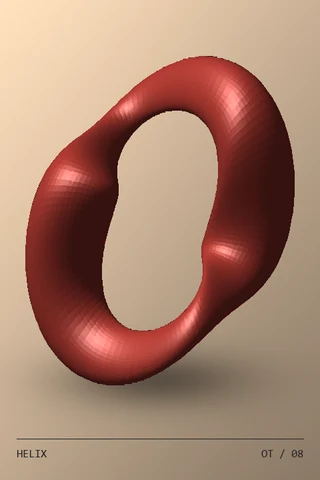
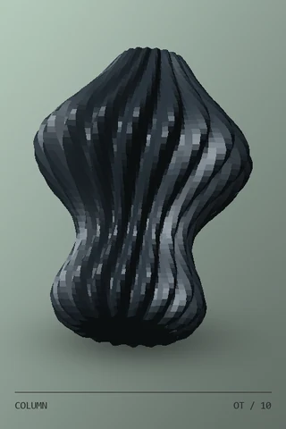
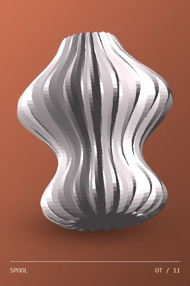

OUT
THERE











- Custom websites
- Search & organic growth
- Motion, 3D & automation
Based in India · 10:30:00 IST
Taking on select builds
skip the pitch deck
Most websites look like templates dressed up in buzzwords. We build fast, opinionated products, rank them where people actually search, and automate the busywork behind them.
MORE
MEDIADigital agency
TECH.
VADSOFTProduct platform
& PIPELINESAI · PDF · Video
VANDANA TRAVELS — LIVE · CLIENT
OUT THERE
Every build leaves with a signature—one tactile detail people remember after closing the tab.
Five moves,
zero theatre
No bloated decks or six-week discovery loops. You see working software early and watch it sharpen in real time.
CUT THE NOISE
We figure out what actually moves the needle for your business and drop everything that doesn’t.
- Product & audience audit
- Search intent mapping
- Clear scope
SET THE ANGLE
One sharp positioning angle, visual direction, and site structure locked before a single screen is over-engineered.
- Information architecture
- Visual territory
- Motion direction
DESIGN IN MOTION
Type, layout, interaction, and 3D built together—so the prototype already feels like the finished product.
- Responsive UI system
- Interactive prototype
- Micro-interactions
BUILD & RANK
Clean front-end code, real performance budgets, and technical SEO baked in before launch—not patched on later.
- Production engineering
- Technical SEO setup
- Cross-device QA
AUTOMATE
Need AI video runs, automated PDF generation, or media pipelines behind the scenes? We wire that in too.
- AI video workflows
- Dynamic PDF templates
- Creative editing
Two people.
Zero middlemen.
One of us obsesses over design, code, 3D and automation pipelines; the other makes sure people actually find it and convert. No account managers translating your brief.
Design & engineering
Interfaces · Motion · Real-time 3D
SEO & distribution
Search architecture · Organic growth
Systems & pipelines
AI video · PDF engines · Workflows
Pick your
entry point
Fixed scope, direct access to the people doing the work, and zero agency fluff.
Site + SEO
Designed from scratch, engineered for speed, and wired to rank.
- Custom UI & responsive build
- Technical & on-page SEO
- Performance tuning
- Clean launch handover
Full studio build
Flagship web experience, custom motion/3D, SEO foundation, and launch polish.
- Complete design & front-end
- Custom motion & WebGL
- Search growth architecture
- Post-launch iteration
Creative & AI systems
Automated AI video runs, dynamic PDF generators, and post-production pipelines.
- AI video generation pipelines
- Automated PDF templates
- Image & video editing
- Custom workflow automation
Before you
write in
Straight answers—no sales script.
01What do you actually build?
Custom websites that don’t look like everyone else’s, technical SEO foundations that bring in real traffic, and automated creative pipelines—AI video, dynamic PDF templates, and media editing.
02Who’s actually doing the work?
Just the two of us. Design, development, motion and automation on one side; client strategy and SEO on the other. You talk directly to the people shipping it.
03Wait—you build AI video and PDF pipelines too?
Yeah. If your team wastes hours generating repetitive videos, formatting PDFs/proposals, or editing creative assets by hand, we build automated pipelines that handle it cleanly.
04Got proof you can ship?
Scroll up to Selected Work and click any card—Vandana Travels, Inovexa, Two Dots Media, Vadsoft, and Build by Vadsoft are all live client builds.
LET’S BUILD IT!
We’ll tell you how we’d build it.
Direct line to the founders,
no intake forms